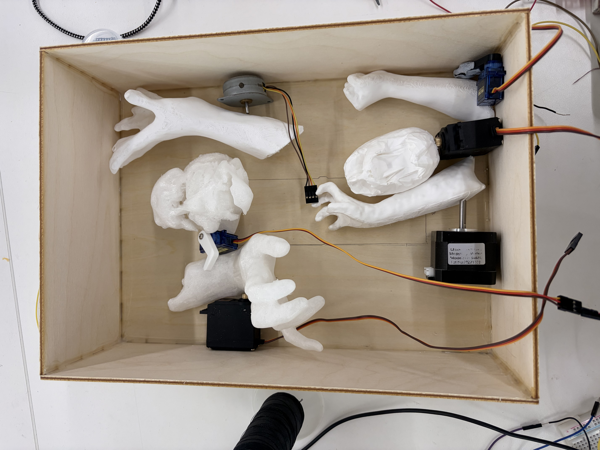

Final Project
I decided that my final project is the concept of a ghost coming alive from a painting. It is alive and trapped, and it tries to escape through the painting. I plan to capture this by making a 'painting' but the canvas is actually fabric and embroidered, with hands and other mechanics behind the painting, pushing the limbs to make it look like it's trying to escape as the fabric wraps around the limbs.
One of the most important parts of my project is the 'painting' that would be on stretchy fabric. Of course my first step was to make sure I had an idea of the motor for the hand movement, but once I got that done, most of the actual assembly actually relied on the size of the embroidery and the 'canvas'. I then started with a design that was--after learning how to use the embroidery for 2 weeks--in the end too complicated, I switched my deisgn for a more simplier look, easier for the machine to handle.
Here is the intial design where the lines are too fine

This is the deisgn I later made, and embroidered with machine and by hand.


Along with the embroidery machine, I also made quite the effort to 3D scan and sometimes freehand Blender to make my 'Ghost' for the painting. I got my roommate, Laura, to volunteer before messing up her face to make it look scary. Below is something that I freehanded myself.
At this point I got all my limbs 3D printed--Thanks Laura! :D--and I made a box using Makercase, and I got two servos to move with the same motion sensor. I decided that I would use a variety of moving parts, such as servos of varying power, and a stepper motor. The following is the box helping me to find the right positions of the limbs, and the video is of the servos moving from motion sensing.

In the last few weeks, I've changed some things. I changed the number of limbs from 6, to 5, to 4, to 3 due to some coding issues. I developed a frame for my canvas, and decorated it with fake moss. The software part was the most annoying; I talked to the TAs Hannah, Victor, and Jonathan to learn about how and which voltages should power which railings in order to not fry my Xiaos. This was important as it, 1, made sure I didn't fry my third Xiao, and 2, made my board much safer. I ended up having two rails, one for 12 volts to power up my stepper motors and one for 5 volts to power my srvos and the motion sensor. The only thing that is 3.3 volts are the power to the capacitors so they get the code from the Xiao.
I was, however, once able to get 3 motors to work, but the second stepper motor decided not to work after the day I saw it working.